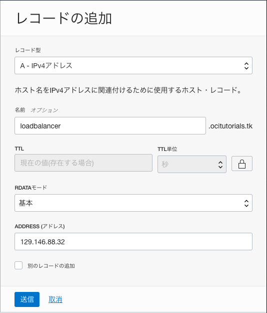

Oracle Cloud Infrastructure の DNSサービスを利用すると、独自のドメイン名でインターネット向けサービスが運用できるようになります。
OCIのDNSは、長年にわたり実績のある Dyn.com のグローバルDNSサービスを利用しています。(DynはOracleグループの一員です) これによりユーザーは、低遅延、高パフォーマンスで、耐障害性のあるDNSサービスをクラウドで利用できるようになります。 名前解決を行う対象は、Oracle Cloud Infrastructure 上のサーバーに限らず、他のクラウドやオンプレミスのサーバーに対しても可能です。 またDyn.comのDNSの特長として、プライマリDNSとしてだけでなく、既に稼働中のDNSにセカンダリとして追加し、サービス全体の耐障害性を高めたりクライアントからの応答時間を短縮したりすることもできます。

このチュートリアルでは、作成済みのロードバランサー(またはWebサーバー)が持つグローバルIPアドレスに対して、取得済みのドメイン名に対する名前解決を行うDNSレコードを作成して、インターネットからアクセスを行います。またその手順を通してOCIのDNSサービスについて理解を深めます。
所要時間 : 約20分
前提条件 :
- Webサーバー(とロード・バランサ:オプション)が構成されて、グローバルIPアドレスにインターネットからアクセスできるようになっていること (もし作業が未実施の場合は、チュートリアル 応用編 - ロード・バランサでWebサーバーを負荷分散する の手順を実施してください)
-
ドメイン名の取得サービスから、独自のドメイン名を取得していること
今回の手順の作成にあたっては、freenom というドメイン取得サービスを利用して予め取得した
ocitutorials.tkという無料のドメイン名を利用しています。 freenomはOracleとは無関係のサービスでありOracleはこのサービスの利用を推奨するものではありません。 もちろん、他のドメイン取得サービスから取得したドメイン名であっても問題なくチュートリアルをご実施頂けますが、その際は一部作業をドメイン名を取得したサービス側で実施する必要がありますので、適宜読み替えてご実施ください。
注意 : チュートリアル内の画面ショットについては Oracle Cloud Infrastructure の現在のコンソール画面と異なっている場合があります。
1. Oracle Cloud Infrastructure でのDNSの設定
1-1.DNSゾーンの追加
最初に、Oracle Cloud Infrastructure のコンソールから、取得済みのドメインをDNSゾーンとして追加する作業を行います。
DNSゾーンとは、ネームサーバーがドメインの一部を分割して情報を格納するための範囲です。今回は ocitutorials.tk というドメインすべてを1つのゾーンとして登録します。
POINT
ocitutorials.tkのようなドメイン全体ではなく、例えばsubdomain.ocitutorials.tk のような一部のサブドメインのみを切り出してOCIのDNSサービスでゾーン管理することもできます。
この場合は ocitutorials.tk ゾーンには、subdomain.ocitutorials.tk の委任に関する情報のみを登録します。
-
コンソールメニューから ネットワーキング → DNS管理 を選択します
-
スタート・ガイド にある ゾーンの管理 ボタンを押します
-
パブリック・ゾーン タブにある ゾーンの作成 ボタンを押します
-
立ち上がった パブリック・ゾーンの作成 ウィンドウに以下の項目を入力し、作成 ボタンを押します
- メソッド : 手動 を選択
- ゾーン名 : 予め取得しておいたドメイン名を入力 (画面では ocitutorials.tk と入力しています)
- コンパートメントに作成 : 任意のコンパートメント
-
ゾーン・タイプ : プライマリ を選択

1-2. ゾーンの初期レコードの確認
ゾーンの登録と同時に、いくつかのDNSレコードが登録されて有効になっています。その情報を確認していきます。
-
先ほど登録したゾーン名 (今回の場合は ocitutorial.tk) のリンクをクリックし、詳細画面に遷移します
-
左下の リソース メニューから レコード を選択します。
-
レコード フィールドに表示されている、最初から登録されているDNSレコードを確認します。

-
後のステップで利用するために、レコードのうちタイプが NS という4つのレコードの情報を確認し、メモしておきます。 例えば上図の例では
ns1.p68.dns.oraclecloud.net.からns3.p68.dns.oraclecloud.net.までの4つのレコードがそれにあたります。 これらのサーバーは、OCIのDNSサービスにゾーンを登録した際に、自動的に登録されるもので、ocitutorials.tkというドメインに対して名前解決を提供する権威(Authoritative)として、4つのネームサーバー(DNSサーバー)が登録されていることを意味します。 -
また、その他に予め登録されているもう一つレコードについても確認します。 タイプが SOA というレコードは Start Of Authority (権威の開始) の略で、ゾーンに分割して管理されているドメインの中で権威が及ぶ(サブ)ドメインの範囲についての情報が記述されているレコードです。 こちらはゾーンに対して必ず必要なもので、ゾーンを登録した際に1つ作成されています。
1-3. 名前解決のためのDNSレコードの追加
作成したゾーンに、Webサーバーまたはロード・バランサの名前解決を行うためのレコードを追加していきます。
- まず、Webサーバーまたはロード・バランサに割り当てられたパブリックIPアドレスの名前解決を行うAレコードを新規登録します。 Aレコードとは、ホスト名をIPv4アドレスに紐付けるためのDNSレコードです。
レコード 欄にある レコードの追加 ボタンをクリックします。
- 立ち上がった レコードの追加 ウィンドウに以下の項目を入力し、送信 ボタンを押します
- レコード型 : *A - *IPv4アドレス を選択
- 名前 : loadbalancer または任意の文字列
- TTL : 右のロックボタンを押してロックを解除した上で 30 と入力
- RDATAモード : 基本 選択のまま
-
ADDRESS WebサーバーまたはロードバランサーのグローバルIPアドレスを入力 (画面では 129.146.88.32 と入力しています)

-
次に、www.ocitutorials.tk というホスト名を loadbalancer.ocitutorials.tk の別名として登録するCNAMEレコードを追加します。
CNAME は Canonical Name の略で、あるドメイン名やホスト名に別の名前をつけて、転送を行います。
CNAMEの設定は必須ではありません。www.ocitutorials.tk に直接Aレコードを作成しても同等のことが実現できますが、CNAMEを使うことにより、ホストが変更になった場合のレコード変更を柔軟に行うことができるようになります。
レコードの追加 ボタンを押し、立ち上がった レコードの追加 ウィンドウに以下の項目を入力し、送信 ボタンを押します。- レコード型 : CNAME - CNAME を選択
- NAME : www
- TTL : デフォルトのまま
- RDATA : 基本 選択のまま
- Address : loadbalancer.<取得したドメイン名> と入力 (画面では loadbalancer.ocitutorials.tk と入力しています)

-
レコードの追加が完了すると、レコード 欄にあたらしいエントリーが追加され、状態が Created になっています。
loadbalancer.ocitutorials.tkとwww.ocitutorials.tkの2つのエントリーが正しく追加されていることを確認してください。
-
この時点ではまだ、追加した2つのレコードはネームサーバーには反映されていません。 反映処理を行うことで初めて名前解決が提供されるようになります。
変更の反映 ボタンを押します。

確認のダイアログが起動してくるので、下部の 変更の公開 ボタンを押して変更を確定させます。

これで変更が反映されました。
通常は約1分ほどで、世界中に分散して存在するOCIのネームサーバーにレコードの情報が追加され、即時に名前解決が開始されます。
その他、Oracle Cloud Infrastructure DNSサービスには、RFCに規定されているほとんどのDNSレコードを登録することができます。
登録できるレコードの種類の詳細についてはドキュメントの DNS - サポートされているリソース・レコード をご参照ください。
以上で Oracle Cloud Infrastructure での作業は完了です。
2. ドメイン取得サービス側でのネームサーバー設定
ここまでで、ns1.p68.dns.oraclecloud.net ~ ns4.p68.dns.oraclecloud.net というOCIのネームサーバーにおいては正しく名前解決が提供される状態になっていますが、このままではローカルPCなどからこれらのネームサーバーに辿りつくことができないため、インターネットに広く名前解決が提供されている状態にはなっていません。
そこで、次のステップとして、ocitutorials.tk というドメインのより上位のサーバー、今回の場合は .tk というトップレベルドメイン(TLD)の権威ネームサーバーに、ocitutorials.tkを管理するネームサーバーの情報を登録し、ocitutorials.tk ドメインに対する名前解決の要求がきた場合にOCIのネームサーバーに正しく転送されるように設定する必要があります。
これらの作業は、ドメイン取得を行った登録業者(レジストラー)側にて実施します。
2-1. Oracle Cloud Infrastructure のネームサーバーの確認
OCIコンソール上で名前解決を提供するネームサーバーを確認します。
既にゾーン作成時にメモ済の場合はこの手順はスキップしてください。
-
コンソールメニューから ネットワーキング → DNS管理 → ゾーン を選択し、ステップ1で登録したゾーン名 (今回の場合は ocitutorial.tk) のリンクをクリックし、詳細画面に遷移します
-
レコード 欄に表示されているレコード一覧のうち、タイプ: NS となっているすべてのレコードの RDATA 欄を確認し、メモします

上図の例だと、
ns1.p68.dns.oraclecloud.net.などの部分になります。これが実際に名前解決を提供するOCI上の権威ネームサーバーです。
2-2. ドメイン取得サービス側にネームサーバーを登録
ドメインを取得したサービスにおいて、先ほどメモしたサーバーをドメインに登録します。
今回は、以下は freenom にて実行していますが、実際にはみなさまがドメインを取得したサービスにおいて実施してください。
-
https://www.freenom.com にアクセスし、ユーザー名/パスワードを入力してログインします
-
Management Tools → Nameservers を選択します

-
Use custome nameservers (enter below) ラジオボタンをチェックし、下の Nameserver 1 から Nameserver 4 に、ステップ2-1で確認した権威ネームサーバー名を入力します

-
Change Nameservers ボタンを押します。
これで、作業は完了です。
3. DNSの動作確認
既にここまでの作業で全ての設定が完了し、www.ocitutorials.tk というドメインは、グローバルで名前解決が提供されていますので、あとは確認するだけです。
-
ブラウザの新しいタブを開き、アドレスバーに www.<取得したドメイン> と入力します。 (下図の例では www.ocitutorials.tk と入力しています)

すると、ロードバランサーを経由して第6章で作成したApacheウェブサーバーのコンテンツが表示されます。 ブラウザを再ロードすると、Webサーバー番号の表示も変わるはずです。(ロードバランサーも正しく動いています)
-
ローカルPCでコマンドプロンプト(Windows)やターミナル(Mac/Linux)を立ち上げて以下を実行します nslookup www.<取得したドメイン>

正しく名前解決が行われていると、正しいIPアドレス (画面では 129.146.88.32) が返されます。
以上で、このチュートリアルの作業は終了です。
4. この後のお勧めステップ
-
OCI活用資料集 - ヘルスチェック & トラフィック管理
OCIのエンドポイントをOCIの外部(aws、GCPなどのクラウドサービス)から能動的に監視し、通知やアクションを行う機能(ヘルスチェック)や、複数のグローバルIPを持つサービスをロードバランシングしたり、ヘルスチェックの状態に応じてフェイルオーバーしたり、地理的な位置に応じてトラフィックを分散したりする機能(トラフィック管理)など、DNSを利用したさらに高度な機能についての説明スライド -
アーキテクチャ・センター - VCNでのプライベートDNSの使用
VCN(仮想クラウド・ネットワーク)の中のプライベートIPアドレスの名前解決を行うためのプライベートDNS機能についてのドキュメント